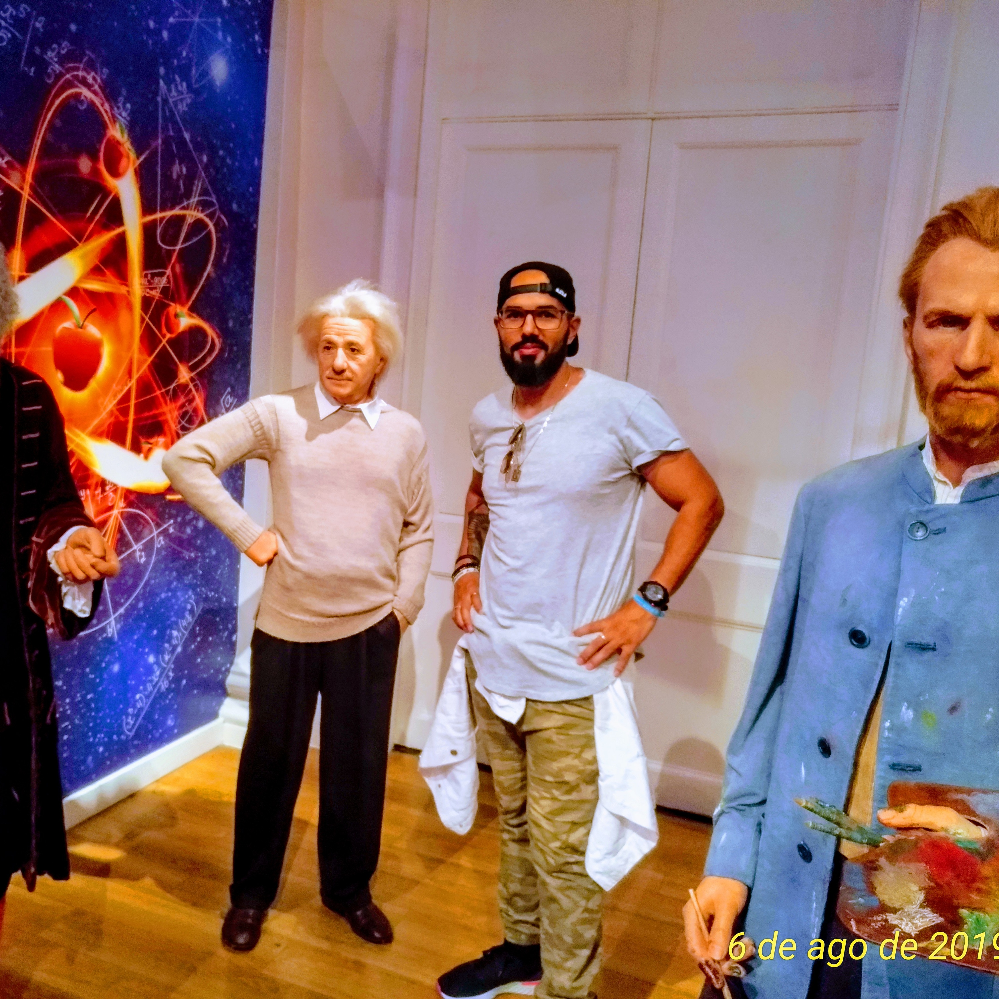

Júlio César Tinin

Mergulhando no mundo do Desenvolvimento Full-Stack na Trybe
Entusiasta da tecnologia
Brasil / São Paulo
Já fui aluno do curso de Ciência da Computação e agora curso Engenharia de Software
Trabalhei na área de T.I. durante um tempo, porém com foco em tecnologias de redes e telecomunicações
No meu trabalho anterior, desenvolvia diversas atividades importantes,
dentre as principais, estavam:
- Desenvolvimento de propóstas técnicas
- Contato com cliente
- Escopo de projetos de redes
- Análise de licitações
Também gosto de fazer outras coisas nas horas vagas:
- Boxe
- Corrida de rua
- Livros
- Séries
- Games
Faz muito tempo que não entro em blog nenhum, mas costumava entrar nesse:
Liga de Boxe